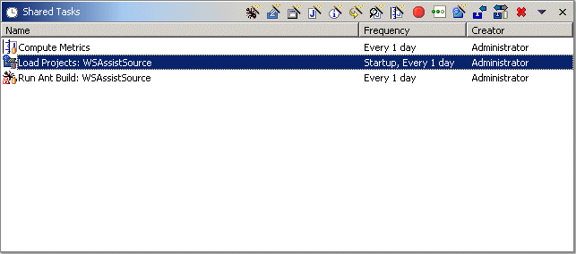
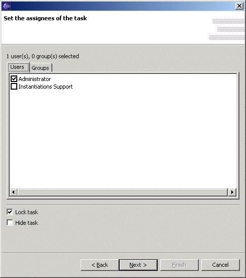

Collaboration Shared Task ViewThis view is for creating scheduled tasks and assigning them to users and groups. It is part of the Collaboration Administration perspective. A shared (scheduled) task automatically appears in the scheduler view of an assignee's workbench. A shared task may be locked, meaning an assignee cannot delete it. The icons associated with shared tasks are the same as for scheduled tasks, but with a shared decorator, and possibly a locked decorator.  Only group leaders and the administrator may assign a shared task to users besides themselves. This view only shows the shared tasks that the current workbench user can delete. For the administrator, this is all of the shared tasks; for a group leader, this is the shared tasks assigned to the groups led. Tool BarThe tool bar has the same buttons as in the scheduler view, and they too open a wizard. However, this wizard (described below) creates a shared task rather than a scheduled task. The tool bar menu contains the following items
Shared Task ListThe columns in this list show the shared task icon and name, the frequency with which it will be run, and who created the task. If open, the properties view shows additional information about the selected task, such as to whom it is assigned.
Shared Task WizardThe wizard for creating shared tasks is almost identical to that for creating scheduled tasks. The only difference is an additional page specifically for setting the attributes of the shared task.  The users and groups tabs show the assignees for the task. The Lock task check box specifies whether the task is locked. The Hide task check box specifies whether the task is hidden. A hidden task is not displayed in the scheduled task view of an assignee's workbench. |